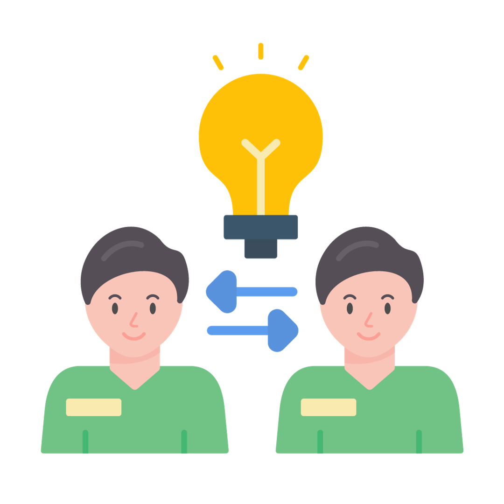

Meningkatkan Pemahaman
Meningkatkan pemahaman masyarakat tentang
bullying dengan meningkatkan pemahaman
masyarakat.
diharapkan masyarakat dapat lebih
memahami masalah bullying dan mengambil
tindakan yang tepat untuk mencegah dan mengatasinya.